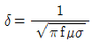
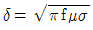
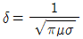
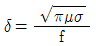
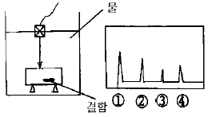
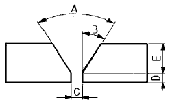
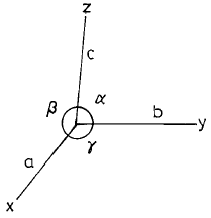
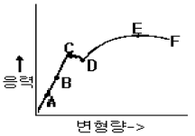

초음파비파괴검사산업기사(구) (2002-05-26 기출문제)
1과목: 초음파탐상시험원리
1. 다음 중 탐촉자의 감도를 최대로 높이기 위한 방법은?
- 수직 탐촉자를 사용한다.
- 직경이 큰 진동자를 사용한다.
- 진동자를 기본 공진주파수가 되도록 한다.
- 탐촉자의 밴드폭을 가능하면 크게 한다.
(정답률: 알수없음)

2. 여러 종류의 비파괴검사의 특징에 대해 기술한 것이다. 올바른 것은?
- 외관시험은 비파괴검사의 한 가지이다.
- 누설자속시험은 압력용기의 물의 높이를 검지하는 것에 적합한 시험방법이다.
- 자분탐상시험은 섬유강화 복합재료의 접촉불량 부분을 검출하는데 적합하다.
- 침투탐상시험은 오스테나이트계 스테인레스강의 비드 중에 내재하고 있는 미세한 균열을 검출하는데 적합한 시험방법이다.
(정답률: 알수없음)
3. 비파괴시험에 사용되는 에너지원으로서 적합하지 않는 것은?
- 알파선
- 마이크로 파
- 적외선
- 열(熱)
(정답률: 알수없음)
4. 초음파 두께 측정기는 초음파 펄스의 어느 정보에 의해 물체의 두께를 측정하는가?
- 초음파의 주파수
- 초음파의 강약
- 초음파의 왕복전파시간
- 초음파의 펄스폭
(정답률: 알수없음)
5. 수직탐촉자를 사용하여 탄소강판을 초음파탐상시험하다가 탐촉자의 주파수가 큰 수직탐촉자로 변경하였다면?
- 종파의 속도는 증가한다.
- 종파의 속도는 감소한다.
- 종파의 속도는 변하지 않는다.
- 종파의 모드 변환을 한다.
(정답률: 알수없음)
6. 수침법에서 첫번째 저면 반사파 앞에 탐상면에 의한 지시파가 많이 나타나는 것을 무엇으로 제거할수 있는가?
- 주파수를 변경시켜서
- 증폭기를 감소시켜서
- 탐촉자와 시편과의 거리를 증가시켜서
- 오목렌즈를 사용해서
(정답률: 알수없음)
7. 수침법에서 수적방지액(Wetting agent)을 사용하는 가장 중요한 이유는?
- 물에 기포가 형성되는 것을 방지하기 위하여
- 탐촉자의 부식방지를 위해
- 초음파 빔의 강도를 높이기 위해
- 불연속부 에코와 저면에코의 구별을 쉽게하기 위해
(정답률: 알수없음)
8. 압전재료로서 송신효율이 가장 좋은 것은?
- 황산리튬
- 수정
- 산화 은
- 티탄산 바륨
(정답률: 알수없음)
9. 주로 보수검사에 사용하는 디지털표시 초음파두께 측정기의 취급시 주의사항에 대해서 바르게 설명한 것은?
- 표시 값은 음향 격리면의 방향에 의해 달라지지 않는다.
- 탐촉자 케이블을 잡아당기거나 구부려 사용해도 상관 없다.
- 두께 측정기를 떨어뜨린 경우에는 측정하한과 오차를 측정해 보는 점검이 필요하다.
- 탐촉자의 접촉면은 아크릴수지를 사용하고 있기 때문에 고온의 측정물에 장시간 접촉하여 사용해도 상관없다.
(정답률: 알수없음)
10. 표면파의 특징을 설명한 것 중 틀린 것은?
- 표면 부근에 에너지가 집중되어 있는 특수한 파이다.
- 발견자의 이름을 따서 Rayleigh wave라고도 한다.
- 파의 전파속도는 시험체의 두께와 사용주파수와의 함수이다.
- 표면 결함을 검출할 때 사용하며 음속은 횡파의 90% 정도이다.
(정답률: 알수없음)
11. 초음파탐상기의 성능점검 사항에 해당되지 않는 것은?
- 증폭 직선성
- 초음파 빔 강도
- 시간축 직선성
- 분해능
(정답률: 알수없음)
12. 초음파탐상시 그 결과에 대한 표시방법중 초음파의 진행시간과 반사량을 화면의 가로와 세로 축에 표시하는 방법은?
- A - Scan
- B - Scan
- C - Scan
- D - Scan
(정답률: 알수없음)
13. 와전류의 표준침투깊이(δ)를 바르게 나타낸 식은? (단, σ는 전도도, μ는 자기투자율, f는 시험주파수)




(정답률: 알수없음)
14. 두께 25mm인 아크릴판을 종파가 왕복하는데 2x10-5sec걸렸다면 이 아크릴에서 종파의 속도는?
- 2,500m/sec
- 1,250m/sec
- 5,000m/sec
- 2,000m/sec
(정답률: 알수없음)
15. 곡률을 갖는 용접부를 경사각탐상할 때 고려해야 할 사항이 아닌 것은?
- 탐촉자와 시험재의 접촉조건
- 대비시험편의 표준결함 형상
- 저면에코의 위치 판단
- 탐촉자 및 진동자의 크기
(정답률: 알수없음)
16. 두께 60mm인 구리합금을 수침법으로 수직 탐상하고자 한다. 이 때 탐상기의 화면에 제1회 및 제2회 표면 반사파사이에 1차 저면 반사파가 나타나도록 하기 위해서 물간거리는 몇 mm이상 유지하는 것이 가장 좋은가? (단, 이 때 물속에서 초음파의 속도는 1500m/sec, 구리합금내에서 초음파의 속도는 3000m/sec로 가정한다.)
- 15
- 25
- 35
- 45
(정답률: 알수없음)
17. 용접부의 경사각탐상에 대한 다음 설명중 올바른 것은?
- 블로우홀이 가장 검출하기 쉽다.
- 루트용입부족은 모드변환이 생기므로 검출이 곤란하다.
- 면상결함은 초음파 빔이 결함면에 대해 수직으로 입사할 때 최대 에코가 얻어진다.
- 덧붙임으로부터의 에코는 항상 작기 때문에 탐상결과에 영향을 주지 않으므로 무시해도 된다.
(정답률: 알수없음)
18. 일반적으로 주조제품에 대한 초음파탐상시 나타나는 현상이 아닌 것은？
- 결정입자의 크기가 크기 때문에 초음파의 속도가 증가한다.
- 결정입자의 크기가 크기 때문에 감쇠현상이 크다.
- 잡음신호가 많아진다.
- 저면반사 에코의 크기가 줄어 든다.
(정답률: 알수없음)
19. 전자방출(Electron emission) 방사선투과시험의 원리를 바르게 설명한 것은?
- 차등 흡수
- 결정구조로 인한 회절
- 높은 원자번호의 재질에서 더 많은 방출로 기인한 전자방출의 차
- 에너지가 다른 전자의 투과능력에 의해 형성된 필름 농도차
(정답률: 알수없음)
20. 역압전 효과란?
- 기계적 에너지를 전기적 에너지로 바꾸어 주는 것
- 전기적 에너지를 기계적 에너지로 바꾸어 주는 것
- 전기적 에너지를 열적 에너지로 바꾸어 주는 것
- 열적 에너지를 전기적 에너지로 바꾸어 주는 것
(정답률: 알수없음)
2과목: 초음파탐상검사
21. 전자주사형 초음파탐상기에 사용되는 배열형(Array) 탐촉자의 주된 특징에 대한 설명 중 틀린 것은?
- 고속 자동탐상에 적합하다.
- 거리 및 방해분해능이 우수하다.
- 복합재료 등에서의 미소결함 검출에 적합하다.
- 음향집속은 음향렌즈에 의한다.
(정답률: 알수없음)
22. 초음파 탐상장치의 구성부와 역할이 잘못 연결된 것은?
- 송신부 - 고전압의 펄스 발생
- 수신부 - 증폭과 감도 조정
- 브라운관 - 지시를 나타냄
- 탐촉자 - 측정범위 조정
(정답률: 알수없음)
23. 주단강품의 초음파 탐상방식에는 시험편 방식과 저면에코방식 2종류가 있다. 표준시험편을 사용하여 그 표준구멍으로부터의 에코가 정해진 높이가 되도록 탐상기의 감도를 조정하는 시험편 방식의 장점으로 볼 수 없는 것은?
- 시험편과 시험재의 감쇠의 차이에 의한 결함에코높이 차이의 보정이 불필요하다.
- 공정간에 탐상한 상호의 데이터들의 비교가 비교적 용이하다.
- 탐상감도의 지시가 용이하다.
- 시험재와 동일한 종류의 강이고 검출목적에 맞는 깊이 및 크기의 인공결함을 임의로 만들 수 있다.
(정답률: 알수없음)
24. 용접부탐상시 시험체의 두께가 두꺼울 때 사용되는 탐촉자의 굴절각에 대한 설명으로 옳은 것은?
- 굴절각이 큰 탐촉자를 사용한다.
- 굴절각이 작은 탐촉자를 사용한다.
- 두께와 굴절각은 관계가 없다.
- 주로 수직 탐촉자를 사용한다.
(정답률: 알수없음)
25. 두께가 14.3mm인 강용접부를 70° 굴절각으로 탐상하려 한다. 1.2스킵(skip)의 시간축 범위는?
- 36mm
- 50mm
- 94mm
- 100mm
(정답률: 알수없음)
26. 초음파 탐상장치의 증폭 직선성에 영향을 미치는 것은?
- 측정범위
- 게이트
- 리젝션
- 스윕지연
(정답률: 알수없음)
27. 초음파 탐상장치에서 브라운관(CRT)의 수평편향판에 직접 관계있는 회로는?
- 스위프 회로
- 증폭 회로
- 탐촉자 회로
- 펄스 회로
(정답률: 알수없음)
28. 수침법으로 피검사체를 검사하고 있을 때 도면과 같은 탐상도형이 CRT에 나타났다. 이 때 피검사체 내부결함의 시그널은 어느 것인가?

- ①번 시그널
- ②번 시그널
- ③번 시그널
- ④번 시그널
(정답률: 알수없음)
29. 다음 중 수침법으로 시험체를 수직탐상하였을 때 표면 에코높이가 최대가 되는 시험체는? (단, 물의 음향임피던스는 1.5x106㎏/mm2s이다.)
- 강(음향임피던스 45.4x106㎏/mm2s)
- 아크릴수지(음향임피던스 3.2x106㎏/mm2s)
- 동(음향임피던스 41.8x106㎏/mm2s)
- 알루미늄(음향임피던스 16.9x106㎏/mm2s)
(정답률: 알수없음)
30. 대비시험편을 제작할 때 유의해야 할 사항이 아닌 것은?
- 재질이 시험재와 동일하거나 근사할 것
- 표면 상태가 시험재와 동일하거나 근사할 것
- 치수가 시험재와 동일하거나 근사할 것
- 인공홈이 가급적 없을 것
(정답률: 알수없음)
31. 초음파탐상시험 방법중 투과법의 특징으로 틀린 것은?
- 두개의 탐촉자를 사용한다.
- 감쇠가 심한 시험체에 적용한다.
- 결함의 깊이를 정확히 알 수 있다.
- 결함에코가 스크린에 표시되지 않는다.
(정답률: 알수없음)
32. 경사각탐촉자의 전이손실(transfer loss)을 측정하는 이유는?
- 접촉매질의 성능을 점검하기 위하여
- 탐촉자의 고유 성능을 보정하기 위하여
- 검사체내에서의 음속의 감소를 보정하기 위하여
- 대비시편과 검사체간의 감쇠차이를 보상하기 위하여
(정답률: 알수없음)
33. 초음파에 의한 결함크기의 측정방법에 대해 기술한 것이다. 틀린 것은?
- F/BF의 dB값은 그 값이 그대로 결함 면적을 나타내고 있다.
- 사각탐상에서 L선을 넘는 범위의 탐촉자이동거리를 결함지시길이로 하는 방법(L선 Cut법)은 큰 결함의 치수 측정에 적합하다.
- 수직탐상에서 최대에코높이의 1/2을 넘는 범위의 탐촉자 이동거리를 결함지시길이로 하는 방법(6dBdrop법)은 큰 결함의 치수 측정에 적합하다.
- DGS선도는 결함을 STB-G와 같은 원형 평면 결함으로 환산하여 평가한다.
(정답률: 알수없음)
34. 초음파가 매질을 통과함에 따라 에너지의 손실이 발생하는데 이와 같은 감쇠의 주된 원인은?
- 굴절 및 반사
- 산란 및 흡수
- 음속 및 임피던스
- 공진 및 변이
(정답률: 알수없음)
35. 주조품을 초음파탐상시험으로 검사하는데는 어려움이 따르는데 그 주된 이유는?
- 아주 작은 결정구조이므로
- 불균일한 결함 형상 때문에
- 초음파 속도가 원래 일정하지 않으므로
- 조대한 결정입도를 가지므로
(정답률: 알수없음)
36. 초음파를 발생시키는 변환자 또는 방법으로 송.수신을 동시에 할 수 없는 것은?
- PAT 변환자
- Quartz 변환자
- EMAT
- Laser에 의한 발생
(정답률: 알수없음)
37. 초음파의 음압을 나타내는데는 데시벨(dB)단위를 사용한다. 만일 초음파의 음압이 1/10로 줄어들었다면 이는 몇 dB 줄어든 것인가?
- 6 dB
- 20 dB
- 30 dB
- 40 dB
(정답률: 알수없음)
38. A-주사법에서 CRT의 수직감도 축에 공급되는 전압을 조정하는 장치는?
- 스위프발생기
- 펄스발생기
- 증폭기회로
- 시간회로
(정답률: 알수없음)
39. 초음파탐상시험에서 진동자와 시험체사이에 액상 접촉매질을 사용하는 주된 이유는?
- 진동자의 마모를 줄이기 위한 윤활제의 역할을 하기 때문에
- 진동자를 시험체면에 직접 접촉시키면 진동하지 않으므로
- 액체가 탐촉자의 전기적 회로를 완성시키므로
- 진동자와 시험체사이에 생긴 공기층이 초음파를 반사시키므로
(정답률: 알수없음)
40. 판재의 초음파탐상시 적산효과를 설명한 것중 적당하지 않는 것은?
- 감쇠가 클 때 발생된다.
- 저면 반사회수가 많을 때 발생된다.
- 판 두께가 얇을 때 발생된다.
- 작은 결함 존재시 발생된다.
(정답률: 알수없음)
3과목: 초음파탐상관련규격 및 컴퓨터활용
41. ASME Sec.V art.5로 재료 및 제조에 관한 초음파탐상검사시 탐촉자 이동속도를 옳게 나타낸 것은? (단, 검교정으로 확인된 때는 제외)
- 3인치/초를 초과할 수 없다.
- 6인치/초를 초과할 수 없다.
- 9인치/초를 초과할 수 없다.
- 12인치/초를 초과할 수 없다.
(정답률: 알수없음)
42. 컴퓨터에 있어서 TCP와 UDP 등의 패킷 전달 서비스를 제공하며 경로 설정을 담당하는 것은?
- ARP
- SMTP
- FTP
- IP
(정답률: 알수없음)
43. 증폭직선성의 측정방법으로 옳지 않은 것은?
- 송신펄스, 저면에코 및 인공홈 에코가 표시기상에 나타나도록 탐상기를 조정한다.
- 게인 또는 탐촉자 위치를 조정하여 에코높이가 풀스케일의 100%가 되도록 맞춘다.
- 게인을 2dB 스텝으로 저하시켜, 그 때의 에코높이를 풀스케일에 대한 %로 읽는다.
- 2dB씩 게인저하를 26dB까지 계속하고, 이 때 에코가 명료하게 판독가능한지 여부를 판정하고 에코 소실상태로 기록한다.
(정답률: 알수없음)
44. ASME Sec.V Art.5의 내용으로 올바르지 않은 것은?
- 초음파장치의 스크린높이 직선성은 ±5%이내여야 한다.
- 탐촉자의 주사속도는 6인치/sec를 넘어서는 안 된다.
- 초음파 장치는 공칭 증폭비 ± 20%의 정밀도를 가진 증폭제어장치를 사용해야 한다.
- 탐촉자를 교정할 때는 접촉쐐기가 부착되지 않은 상태에서 시행한다.
(정답률: 알수없음)
45. ASME Sec.V중에서 강판에 대한 경사각탐상에 관한 것은?
- SE-114
- SE-214
- SA-577
- SA-388
(정답률: 알수없음)
46. ASME Sec.V Art.5에서 주조품 검사에 쓰이는 교정시험편을 제작할 때 두께로 알맞은 것은?
- 재료살두께의 ±15%
- 재료살두께의 ±20%
- 재료살두께의 ±25%
- 재료살두께의 ±30%
(정답률: 알수없음)
47. ASME 규격에 의한 증폭제어장치의 직선성 보정은 각 연속사용기간의 최초 혹은 얼마 만에 한번씩 확인하여야 하는가?
- 매 3개월 미만마다
- 매 4개월 미만마다
- 매 5개월 미만마다
- 매 6개월 미만마다
(정답률: 알수없음)
48. ASME Sec.V에 따라 용접부를 초음파탐상시험시 다음 중 평판의 기본교정시험편을 사용할 수 있는 시험체는?
- 직경 25인치인 재료
- 직경 19인치인 재료
- 직경 15인치인 재료
- 직경 10인치인 재료
(정답률: 알수없음)
49. ASME Sec.V에 의한 거리진폭특성곡선을 작성하여 검사를 수행하던 중 첫번째 거리진폭특성곡선을 확인한 결과 신호 진폭이 2dB보다 감소하였음을 알았다. 취해야 할 조치사항으로 다음 중 옳지 않는 것은?
- 검사 데이타를 전부 무효로 해야 한다.
- 새로 교정해서 기록한다.
- 최종유효 교정까지의 시험결과는 인정한다.
- 무효로한 데이타가 포함된 영역을 재시험한다.
(정답률: 알수없음)
50. KS B 0896에서 규정된 경사각탐상시 에코높이 구분선에의한 에코높이 구분선 작성에 대한 것으로 옳은 것은?
- M선은 H선 보다 6dB 낮다.
- L선은 M선 보다 6dB 높다.
- H선의 높이는 스크린 높이의 50% 이하가 되어서는 안된다.
- 에코높이 구분선의 영역구분은 3으로 한다.
(정답률: 알수없음)
51. KS D 0233의 압력용기용 강판의 초음파탐상검사에서는 결함의 밀집도를 평가하기 위해 환산결함 개수를 구한다. 이 때 어떤 결함으로 환산되는가?
- ○결함
- △결함
- □결함
- X결함
(정답률: 알수없음)
52. KS B 0896으로 용접부를 탐상할 때 공칭탐촉자가 아닌 것은? (단, 순서는 주파수, 공칭굴절각, 진동자 크기)
- 2MHz, 45°, 10×10mm
- 5MHz, 70°, 20×20mm
- 2MHz, 70°, 14×14mm
- 5MHz, 45°, 20×20mm
(정답률: 알수없음)
53. 건축용 강관 및 평강의 초음파탐상시험에 따른 등급분류와 판정기준인 KS D 0040에서 대표 결함의 정의는?
- 탐상선으로 구분한 각 구분의 최대 에코높이를 나타내는 결함
- 점적률이 가장 큰 결함
- 환산된 결함 구분수 중 최대 결함
- DH선을 초과하는 결함 중 길이가 최대인 결함
(정답률: 알수없음)
54. ASME규격에 의한 용기 용접부 시험시 마킹을 해야하는 경우 대상물의 제거후 실시해야 한다면 다음 중 적합한 마킹의 깊이는?
- 3/64 인치 이하
- 3/32 인치 이하
- 1/16 인치 이하
- 3/16 인치 이하
(정답률: 알수없음)
55. ASME Sec.Ⅴ Art.4 규격에서 탐촉자를 주사할 때 중복주사 범위를 규정하고 있다. 중복범위를 계산하는 기준은?
- 초음파 빔의 폭
- 탐촉자의 외경
- 진동자의 치수
- 사용하는 쐐기의 크기
(정답률: 알수없음)
56. 컴퓨터가 처리할 내용을 지시하는 명령어의 집합을 무엇이라 하는가?
- 보조기억장치
- 중앙처리장치
- 시스템 분석
- 프로그램
(정답률: 알수없음)
57. AWS D 1.1에 의한 초음파 장비를 재보정해야 할 사항 중 틀린 것은?
- 탐촉자의 교환
- 밧데리의 교환
- 작업자의 교대
- 결함지시의 측정
(정답률: 알수없음)
58. 다음 중 인터넷 검색엔진의 종류가 아닌 것은?
- Yahoo
- Galaxy
- 심마니
- MIME
(정답률: 알수없음)
59. ASCII 코드에 관한 설명 중 옳지 않은 것은?
- 대문자와 소문자를 구별한다.
- 256개의 문자표현이 가능하다.
- 영문자 하나를 7비트로 표현한다.
- 1비트의 패리티 비트를 갖고 있다.
(정답률: 알수없음)
60. ASME Sec. Ⅺ내의 부절(Subsection)중 원자력 발전소내 Class 1 부품에 대한 요구사항이 수록된 것은?
- IWA
- IWB
- IWC
- IWD
(정답률: 알수없음)
4과목: 금속재료 및 용접일반
61. 용착된 금속의 급랭을 방지하는 목적이 아닌것은?
- 용착금속 중에 가스나 슬래그가 떠오를 수 있는 시간을 주기 위함
- 모재와 용착금속이 자유로이 팽창, 수축하도록 하기 위함
- 담금질 경화를 방지하기 위함
- 슬래그제거를 쉽게하기 위함
(정답률: 알수없음)
62. 주철에 나타나는 스테다이트(steadite)조직의 3원 공정물이 아닌 것은?
- MnS
- Fe
- Fe3P
- Fe3C
(정답률: 알수없음)
63. 다음 그림과 같은 용접 홈(Groove) A, B, C부 명칭으로 모두 올바른 것은?

- A : 베벨 각도, B : 홈 각도, C : 루트 간격
- A : 개선 각, B : 베벨 각도, C : 루트 면
- A : 홈 각도, B : 베벨 각도, C : 루트 면
- A : 홈 각도, B : 베벨 각도, C : 루트 간격
(정답률: 알수없음)
64. Ni-Cr계 합금의 특징 중 틀린 것은?
- 전기 저항이 대단히 작다.
- 내식성이 크고 산화도가 적다.
- Fe 및 Cu에 대한 열전 효과가 크다.
- 내열성이 크고 고온에서 경도및 강도의 저하가 적다.
(정답률: 알수없음)
65. 그림에서 각축의 단위 길이를 a,b,c라 하고 그 사이의 각도를 α ,β ,γ라 했을 때 정방정계는?

- a=b=c, α =β =γ=90°
- a=b≠ c, α =β =γ=90°
- a≠ b≠ c, α =β =γ≠ 90°
- a=b=c, α =β =90° ,γ=120°
(정답률: 알수없음)
66. 점용접(spot welding)시 전극소재(Electrode materials)의 요구되는 성질이 아닌것은?
- 피 용접재와 합금이 잘 될것
- 전기 전도도가 높을것
- 고온에서 경도가 높을것
- 열 전도도가 높을것
(정답률: 알수없음)
67. 서멧(cermet)의 특징이 아닌 것은?
- 고속절삭에 적당하다.
- 절삭속도의 광범위한 변화에 적당하다.
- 고온경도가 높고 내마모성, 내식성 등이 우수하다.
- 강 및 주철 절삭에 부적당하고 브레이징(Brazing)이 불가능하다.
(정답률: 알수없음)
68. 황금색으로 모양이 곱고 연성이 커서 장식용에 많이 쓰이는 것으로서 아연이 5∼20% 포함된 구리합금은?
- 포금
- 문쯔메탈
- 톰백
- 델타메탈
(정답률: 알수없음)
69. 부재를 접합하는 용접이음의 다섯가지 기본형에 속하지 않는 것은?
- T 이음
- 모서리 이음
- 원통 이음
- 겹치기 이음
(정답률: 알수없음)
70. 단위포의 모서리 길이의 단위인 1Å과 같은 것은?
- 10-8㎝
- 10-8㎜
- 10-4㎝
- 10-4㎜
(정답률: 알수없음)
71. X선으로 반사법을 이용하여 금속의 결정구조를 측정할 때 결정면의 면간 거리를 나타내는 식은? (단, d:면간거리, n:정정수(正整數), λ:파장)
- d=nλ/2sinθ
- d=2sinθ/nλ
- d=nλsinθ
- d=λsinθ
(정답률: 알수없음)
72. 순수한 카바이트 1㎏ 에서는 이론적으로 약 몇ℓ 의 아세틸렌을 발생하는가?
- 280ℓ
- 290ℓ
- 326ℓ
- 348ℓ
(정답률: 알수없음)
73. 화학적 표면경화법이 아닌 것은?
- 고주파 담금질
- 침탄법
- 질화법
- 시안화법
(정답률: 알수없음)
74. 피복 금속아크 용접시 다음의 용접 전원 중에서 용입이 가장 깊은 것은?
- AC
- ACHF
- DCSP
- DCRP
(정답률: 알수없음)
75. 용접 금속에 흡수된 수소가스의 악영향은?
- 선상조직(線狀組織)
- 시효경화(時效硬化)
- 청열취성(靑熱脆性)
- 적열취성(赤熱脆性)
(정답률: 알수없음)
76. 다음 용접법 중 정전압 특성을 이용한 용접봉 송급방식이 아닌 것은?
- CO2 용접
- MIG 용접
- TIG 용접
- 서브머지드 용접
(정답률: 알수없음)
77. 접합하려고 하는 한쪽의 부재에 둥근 구멍을 뚫고 그곳에 용접하여 이음 하는 용접은?
- 플레어용접
- 비드용접
- 플러그용접
- 슬롯용접
(정답률: 알수없음)
78. 용접작업시 홈(groove)을 만드는 주된 이유는?
- 용입을 양호하게 하기 위하여
- 용접변형을 최소화 하기 위하여
- 전류응력의 발생을 억제하기 위하여
- 용융속도를 높이기 위하여
(정답률: 알수없음)
79. 소결전기 접점 재료의 구비조건 중 틀린 것은?
- 접촉저항 및 고유저항이 커야한다.
- 비열 및 열전도율이 높아야 한다.
- 융착 현상이 적어야 한다.
- 열 및 충격에 잘 견디어야 한다.
(정답률: 알수없음)
80. 응력-변형선도에서 최대하중점을 표시한 것은?

- B
- C
- D
- E
(정답률: 알수없음)